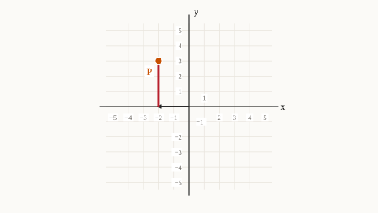
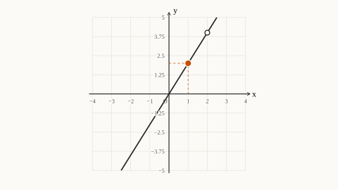
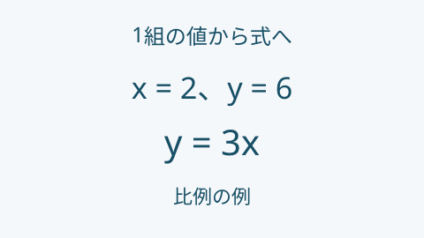
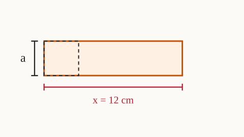
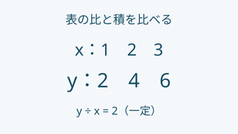

計算の復習分数


中1・1章正の数・負の数

中1・2章文字と式


中1・3章方程式
中1・4章比例と反比例

No. 010動画比例と反比例
表・式・グラフの関係を大きな式で確認
2:37
No. 011ツール座標をたどって点の位置を決める
横のx、次に縦のy。負の座標・軸上・原点を自分で確かめる。

No. 012ツール比例・反比例の倍率を比べる
xを何倍にするとyは何倍？ 表の矢印とグラフで比較。

No. 013ツール1組の値から比例・反比例の式を求める
元のx・yを代入して比例定数を求め、別の点で確かめる。

No. 014ツール固定する量で比例・反比例を比べる
高さを固定した長方形と、面積を固定した長方形を比較。

No. 015ツール表の商と積を比べる
y÷xとx×yを比較。1つの値を変えて、同じ関係に合うか調べる。
中1・5章平面図形

中1・6章空間図形


中2・3章1次関数


中2・4章平行と合同


中2・5章三角形と四角形

確率・統計中学


確率・統計有名な問題


確率・統計高校・大学


教材が見つかりませんでした
短い言葉で検索するか、絞り込みを解除してください。